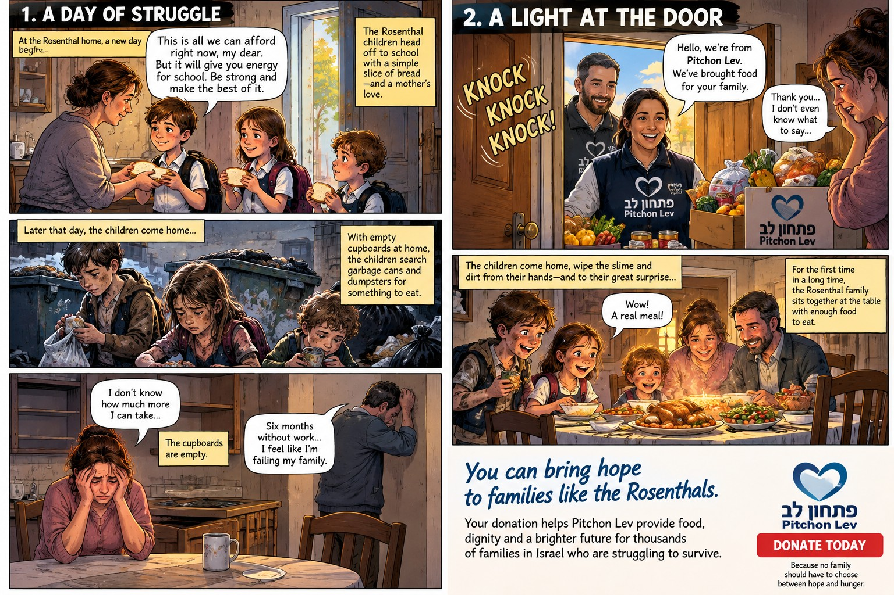

Pitchon Lev — Fundraising Comic Concepts
Three fictional visual fundraising concepts exploring food insecurity, dignity, and the value of timely assistance. Independent speculative portfolio work; not commissioned or endorsed by Pitchon Lev.

